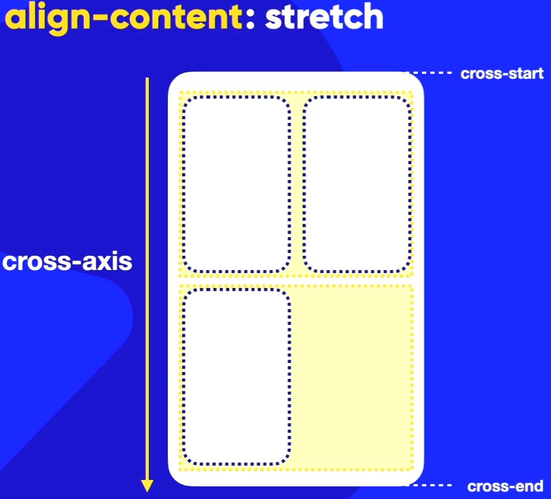
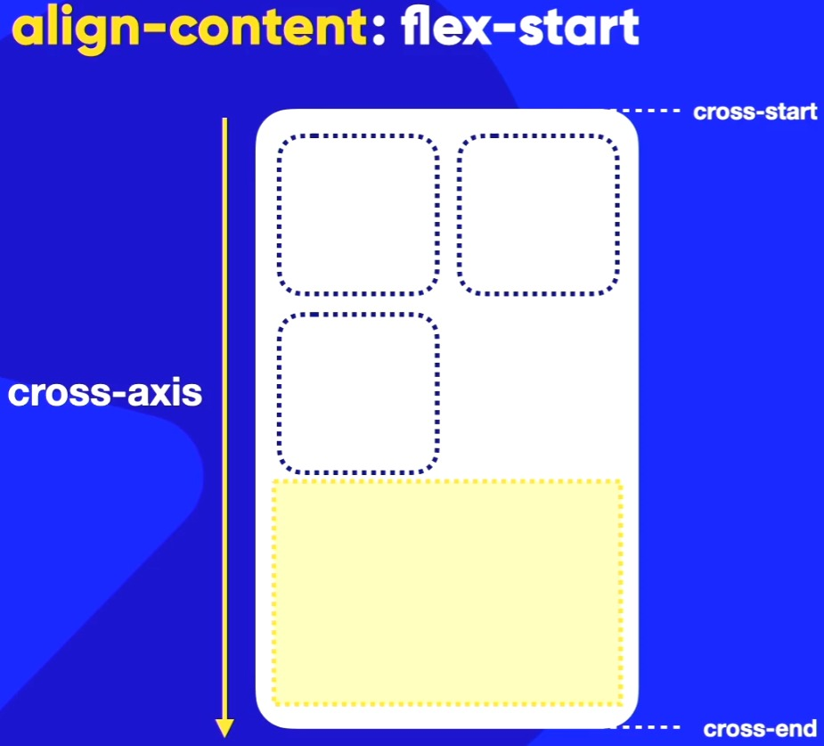
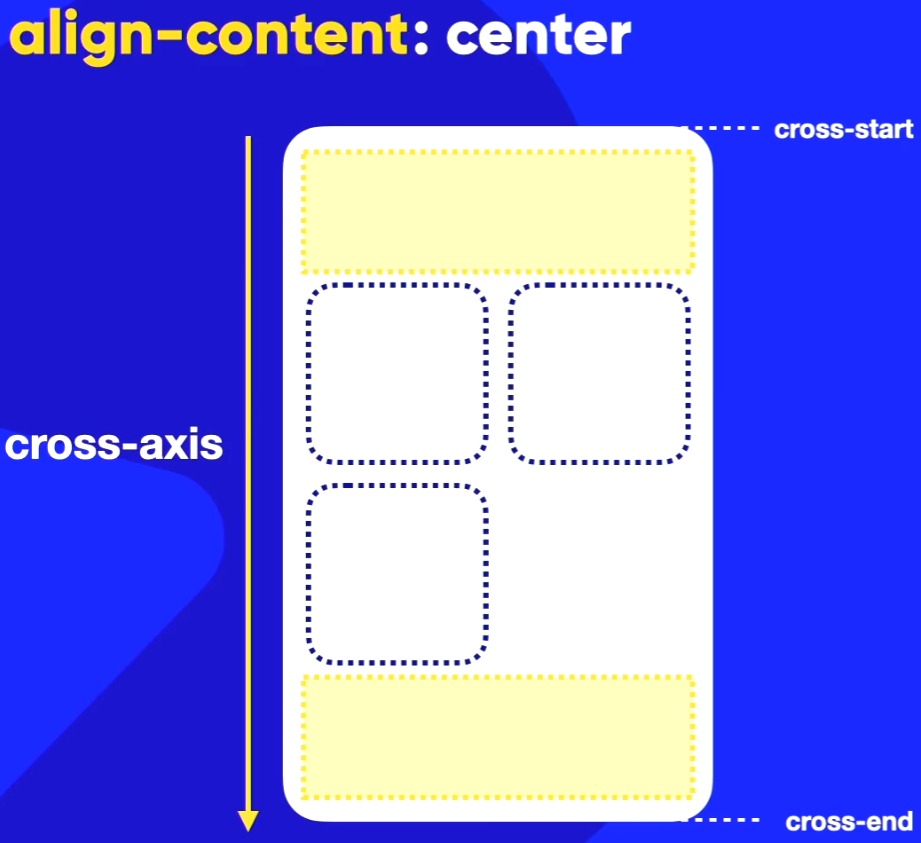
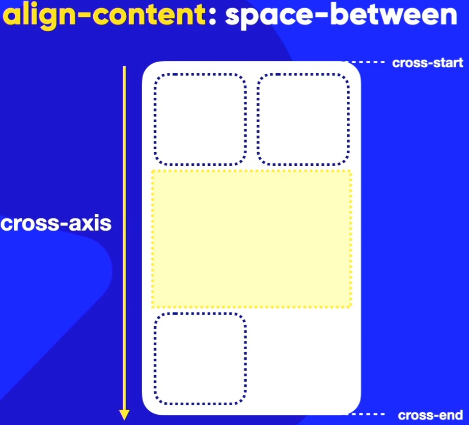
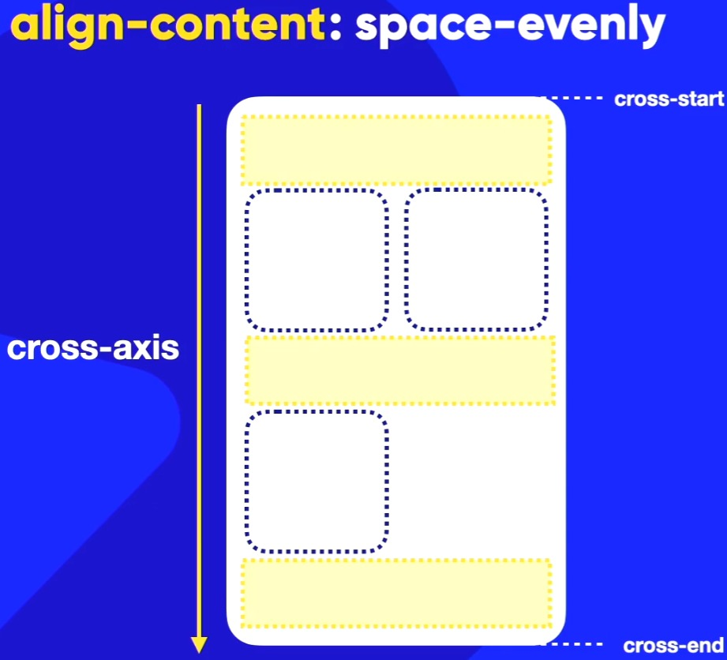
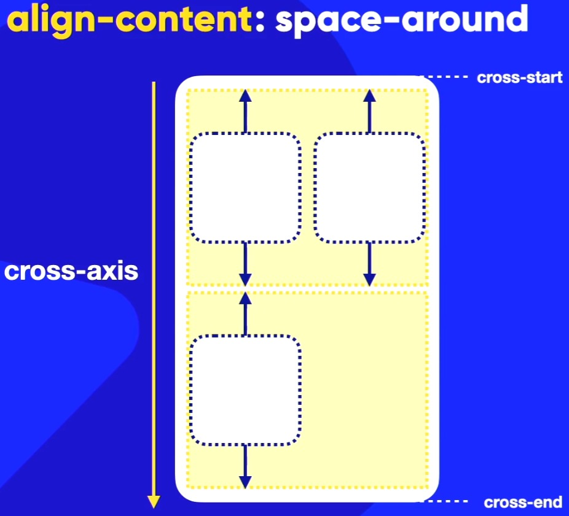

- Align Content -
O align-content: alinha os itens na transversal mas quando eles estão wrap. Ele por padrão tem o valor stretch que nem o align-itens! Lembrando que para que possa ser mostrado
o stretch, o height do container deve ser maior que a soma dos heights dos itens.
align-content: stretch;
Esse é o valor padrão do do align-content: ele estica os itens para preencher o container. Se o height do container for menos que a soma dos heights dos itens, o stretch não será percebido. Na imagem abaixo, o height do container é maior que a soma dos heights dos itens e por isso o stretch é percebido. ↓

align-content: flex-start;
Ao usar a propriedade align-content: flex-start, os itens serão alinhados no início do eixo transversal do container. Isso significa que todos os itens serão posicionados na parte superior do container, deixando qualquer espaço extra na parte inferior em branco como no exemplo abaixo:

align-content: flex-end;
Mesma coisa que o flex-start mas ao contrário, ou seja, os itens serão alinhados na parte inferior do container, deixando qualquer espaço extra na parte superior em branco. Lembrando que isso dependente de como está configurado o flex-direction:!
align-content: center;
Com o align-content: center; os itens serão centralizados no eixo transversal do container (CROSS-AXIS) de forma que o espaço extra em branco seja distribuído igualmente acima e abaixo dos itens. Isso cria um efeito visual onde os itens ficam agrupados no centro do container como mostrado na imagem abaixo:

align-content: space-between;
Ao usarmos a propriedade align-content: space-between, ele vai se comportar da mesma forma que vimos anteriormente ao usarmos o justify-content: space-between. Ele vai pegar os itens, colocar nas extremidades (CROSS-START e CROSS-END) e vai deixar um espaço em branco no meio. Caso haja mais itens, o espaço em branco no meio será preenchido da mesma forma que o justify-content: space-between. Veja a imagem abaixo:

align-content: space-evenly;
Ao usar o align-content: evenly;, ele vai colocar um espaço no cross-start e no cross-end e nos elementos também para que exista o mesmo espaçamento entre eles. Os espaços em branco serão do mesmo tamanho para os itens ficarem milimetricamente distribuidos de forma igual! Veja na imagem abaixo:

align-content: space-around;
O align-content: space-around;, vai começar dividindo o espaço na transversal (cross-axis) em partes iguais e centralizar os itens. Veja imagem abaixo:

Resumo:
Eis uma lista sobre cada elemento e suas funções:
- O elemento justify-content: é usado quando formos configurar o item no eixo principal e lembre do exemplo do trilho do trem do Guanabara (MAIN-AXIS) que pode mudar de direção dependendo do flex-direction: .
- O elemento align-itens: é quando formos configurar o item no eixo transversal (CROSS-AXIS). Por exemplo, se o flex-direction: row estiver com esse valor de row, o eixo transversal (CROSS-AXIS) será de cima para baixo.
-
O elemento align-content: é quando formos configurar o item que estiver com o elemento flex-flow: row wrap (ou seja,
empacotado
) e assim, configurarmos o comportamento que o item terá aoquebrarmos
o item (diminuir a página por exemplo).
Lembrando que todos as propriedades citadas acima, eles estão aplicados aos containers! Na próxima aula, iremos falar sobre essas propriedades aplicadas aos itens!